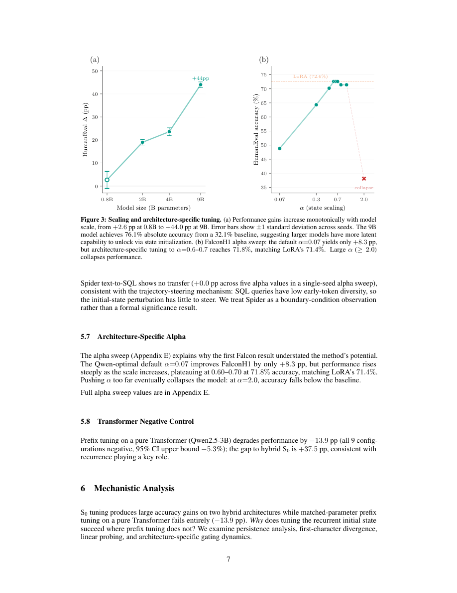

#1
★ 7/10
S0 Tuning: Zero-Overhead Adaptation of Hybrid Recurrent-Attention Models
S0调优：混合递归-注意力模型的零推理开销自适应方法

图 Figure · Page 7 of paper
🎯 仅调优初始递归状态矩阵，实现零推理开销微调，超越LoRA
Tuning only the initial recurrent state matrix achieves zero-overhead PEFT, beating LoRA on code generation.
| 维度 | 中文 | English |
|---|---|---|
| ❓ 待解决 的问题 |
高效微调大语言模型非常重要，尤其是在标注数据稀缺时。现有方法如LoRA会增加推理开销或在切换任务时需要合并权重。而混合递归-注意力模型拥有独特的"递归状态"结构，这一特性尚未被用于模型微调。 | Fine-tuning large language models efficiently is critical, especially when labeled data is scarce. Existing methods like LoRA add trainable weight adapters that increase inference cost or require weight merging when switching tasks. Hybrid models combining recurrent layers and attention have a unique architectural feature — the recurrent state — that has not been explored as a tuning surface. |
| 💡 解决 的亮点 |
- **全新调优入口**：只优化每个递归层的初始隐藏状态矩阵（S0），所有模型权重完全冻结，是混合模型中全新的参数高效微调范式。\n- **零推理开销**：与LoRA不同，推理时无需额外计算；切换任务只需加载约48MB的状态文件，无需合并权重或重载模型。\n- **轨迹导向机制**：该方法通过在第一个token处引导递归轨迹发挥作用，解释了其在相关领域（代码→数学）的迁移能力，以及在结构差异大的任务（文本转SQL）上无法迁移的原因。 | - **Novel tuning surface**: Optimizes only the initial hidden state matrix (S0) of each recurrent layer, leaving all model weights frozen — a completely new PEFT paradigm for hybrid models.\n- **Zero inference overhead**: Unlike LoRA, no extra computation is added at inference time; task switching requires only loading a ~48 MB state file with no weight merging or model reload.\n- **Trajectory-steering mechanism**: The method works by steering the recurrent trajectory from the very first token, explaining both its effectiveness on related domains (code→math) and its failure to transfer to structurally dissimilar tasks (text-to-SQL). |
| 🧪 实验 内容 |
实验在HumanEval（代码生成）、MATH-500（数学推理）、GSM8K（算术推理）和Spider（文本转SQL）四个基准上进行。主要基线为LoRA和前缀调优（Prefix Tuning）。测试模型包括Qwen3.5-4B（GatedDeltaNet混合架构）、FalconH1-7B（Mamba-2混合架构）和Qwen2.5-3B（纯Transformer，作为控制组）。训练数据约为48条执行验证的HumanEval解答，实验通过多随机种子（3-10个）验证统计显著性。 | Experiments were run on four benchmarks: HumanEval (code generation), MATH-500 (math reasoning), GSM8K (arithmetic), and Spider (text-to-SQL). The main baselines are LoRA and prefix tuning. Models tested include Qwen3.5-4B (GatedDeltaNet hybrid), FalconH1-7B (Mamba-2 hybrid), and Qwen2.5-3B (pure Transformer as a control). Training uses only ~48 execution-verified HumanEval solutions, and statistical significance is verified across multiple random seeds (3–10 seeds per experiment). |
| 📊 实验 结果 |
在Qwen3.5-4B上，S0调优在HumanEval的贪心pass@1指标上提升+23.6±1.7个百分点（10个种子），超越LoRA达+10.8 pp（p<0.001）。在FalconH1-7B上，S0达到71.8%±1.3，与LoRA的71.4%±2.4统计上无显著差异（3个种子），但无推理开销。跨域迁移至MATH-500提升+4.8 pp（p=0.00002，8个种子），GSM8K提升+2.8 pp（p=0.0003，10个种子）。Spider（文本转SQL）无迁移效果。逐步状态偏移变体在Qwen3.5上达到+27.1 pp，但有逐步推理开销。纯Transformer Qwen2.5-3B上的前缀调优在所有9种配置下均下降-13.9 pp。 | On Qwen3.5-4B, S0 tuning improves greedy pass@1 by +23.6 ± 1.7 pp on HumanEval (10 seeds), outperforming LoRA by +10.8 pp (p < 0.001). On FalconH1-7B, S0 reaches 71.8% ± 1.3 vs. LoRA's 71.4% ± 2.4 (statistically indistinguishable, 3 seeds) but with zero inference overhead. Cross-domain transfer to MATH-500 yields +4.8 pp (p = 0.00002, 8 seeds) and GSM8K +2.8 pp (p = 0.0003, 10 seeds). Spider (text-to-SQL) shows no transfer. A per-step state-offset variant achieves +27.1 pp on Qwen3.5 but adds per-step inference cost. Prefix tuning on the pure Transformer Qwen2.5-3B degrades by -13.9 pp across all 9 configurations tested. |
| 🏁 结论 | S0调优证明了混合语言模型中初始递归状态矩阵是一个强大且实用的参数高效微调入口，仅需约48条训练样本即可以零推理开销匹配甚至超越LoRA。这确立了递归状态初始化作为一种独特且高效的适应范式，专为混合递归-注意力架构量身定制。 | S0 tuning proves that the initial recurrent state matrix in hybrid language models is a powerful and practical PEFT surface that can match or surpass LoRA with zero inference overhead, using only ~48 training examples. This establishes recurrent state initialization as a distinct and highly efficient adaptation paradigm uniquely suited to hybrid recurrent-attention architectures. |
| 🔗 论文 链接 |
arXiv: 2604.01168v1 · 📥 PDF | |
⚙️ Method · 方法详解
S0调优冻结所有Transformer和递归权重矩阵，仅为混合模型中每个递归层学习一个初始状态矩阵。该初始状态在模型处理任何输入token之前就已介入，将模型的递归动态"预热"并引导至任务相关的行为轨迹。训练过程中，仅更新这些小型状态矩阵，使用执行验证的代码解答作为监督信号。推理时，只需在前向传播前注入调优后的初始状态，相较于基础模型不增加任何计算开销。
S0 tuning freezes all transformer and recurrent weight matrices and instead learns a single initial state matrix for each recurrent layer in a hybrid model. This initial state acts as a "warm start" that biases the recurrent dynamics before any input token is processed, steering the model's internal trajectory toward task-relevant behavior. During training, only these small state matrices are updated using a verified supervision signal (execution-verified code solutions). At inference time, the tuned initial states are simply injected before the forward pass, adding zero computational overhead compared to the base model.
📐 Key Formulas · 关键公式
\[\hat{s}_0^{(l)} = s_0^{(l)} + \Delta s_0^{(l)}\]
💡 S0调优的核心：每个递归层l的初始状态由基础状态加上可学习的偏移量构成，只有偏移量Δs₀被训练，基础模型权重全部冻结。
The core of S0 tuning: the initial state of each recurrent layer l is the base state plus a learnable offset. Only the offset Δs₀ is trained; all base model weights remain frozen.
\[\text{pass@1} = \mathbb{E}_{\text{problem}}[\mathbf{1}[\text{greedy solution passes tests}]]\]
💡 HumanEval评估指标：对每道编程题，用贪心解码生成一个解答，若通过所有单元测试则计为1，取所有题目的平均值。
The HumanEval evaluation metric: for each problem, one solution is generated greedily; it scores 1 if it passes all unit tests, and the score is averaged across all problems.
🌟 Why It Matters · 为什么重要
随着混合递归-注意力模型（如Mamba和GatedDeltaNet混合架构）与纯Transformer的竞争力日益增强，本研究开辟了一种架构原生的调优维度，既数据高效又在推理时完全无开销。对于需要快速、低成本任务适配的从业者——尤其是在代码、数学或推理领域——S0调优提供了一种极具吸引力的LoRA替代方案，仅需一个小文件即可实现任务切换。
As hybrid recurrent-attention models (like Mamba and GatedDeltaNet hybrids) become increasingly competitive with pure Transformers, this work opens a new, architecturally-native tuning dimension that is both data-efficient and computationally free at inference. For practitioners needing rapid, low-cost task adaptation — especially in code, math, or reasoning domains — S0 tuning offers a compelling alternative to LoRA with the practical bonus of trivial task switching via a single small file.